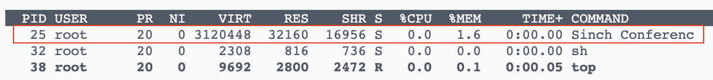

Adam Białas
Java Developer
Rich Messaging (Conversation API / WhatsApp Messaging)
Create thread (basic approach)
Thread thread = new Thread(() -> {
System.out.println("Thread started");
try {
Thread.sleep(60000);
} catch (InterruptedException e) {
throw new RuntimeException(e);
}
}, "Sinch Conference");
thread.start();
JVM (user) and kernel thread mapping
Thread thread = new Thread(() -> {
System.out.println("Thread started");
try {
Thread.sleep(60000);
} catch (InterruptedException e) {
throw new RuntimeException(e);
}
}, "Sinch Conference");
thread.start();
TOP command output
Spring MVC Servlet Container Tomcat, 200 concurrent requests
-XX:NativeMemoryTracking=summary, -XX:+UnlockDiagnosticVMOptions
Problems:
Problems:
Spring Webflux Netty, 200 concurrent requests
Summary
Thread-per-request with Spring MVC and Tomcat
@GetMapping("/{postId}")
Post getPost(@PathVariable String postId) {
log.info("Getting post: {}", postId);
Post post = slowServiceClient.getPost(postId);
log.info("Got post {}: {}", postId, post);
return post;
}
#application.properties
spring.threads.virtual.enabled=true
Start new VirtualThread
Thread thread = Thread.ofVirtual()
.name("Sinch Conference Virtual")
.start(() -> {
log.info("Thread started");
try {
Thread.sleep(60000);
} catch (InterruptedException e) {
throw new RuntimeException(e);
}
});
Start new VirtualThread with ExecutorService
try (var virtualThreadExecutor = Executors.newVirtualThreadPerTaskExecutor()) {
virtualThreadExecutor.submit(() -> {
log.info("Thread started");
try {
Thread.sleep(60000);
} catch (InterruptedException e) {
throw new RuntimeException(e);
}
});
}
Execute tasks in parallel
try (var virtualThreadExecutor = Executors.newVirtualThreadPerTaskExecutor()) {
Future<String> dataFromUrl = virtualThreadExecutor
.submit(() -> fetchDataFromUrl());
Future<String> dataFromDb = virtualThreadExecutor
.submit(() -> fetchDataFromDatabase());
log.info("Data from url: {}, data from db: {}", dataFromUrl.get(), dataFromDb.get());
} catch (ExecutionException e) {
log.error("Error when fetching data", e);
throw new RuntimeException(e);
}
Continuation object
Continuation object
var scope = new ContinuationScope("scope");
var continuation = new Continuation(scope, () -> {
List<String> values = new ArrayList<>();
log.info("Start thread (list values: {})", values);
values.add("foo");
Continuation.yield(scope);
log.info("Continue thread (list values: {})", values);
values.add("bar");
Continuation.yield(scope);
log.info("Continue thread (list values: {})", values);
});
while (!continuation.isDone()) {
continuation.run();
}
Continuation object
var scope = new ContinuationScope("scope");
var continuation = new Continuation(scope, () -> {
List<String> values = new ArrayList<>();
log.info("Start thread (list values: {})", values);
values.add("foo");
Continuation.yield(scope);
log.info("Continue thread (list values: {})", values);
values.add("bar");
Continuation.yield(scope);
log.info("Continue thread (list values: {})", values);
});
while (!continuation.isDone()) {
continuation.run();
}
Start thread (list values: [])
Continue thread (list values: [foo])
Continue thread (list values: [foo, bar])
Problems:
Spring MVC Servlet Container Tomcat, 200 concurrent requests
Summary:
Process max 10 users in parallel (Reactor)
readUsersFromDB()
.flatMap(user -> processUser(user), 10)
.doOnNext(processedUser -> log.info("Finished processing user: {}", processedUser))
Process max 10 users in parallel (Virtual Threads)
Iterable usersFromDB = readUsersFromDB();
Semaphore semaphore = new Semaphore(10);
try (var virtualThreadExecutor = Executors.newVirtualThreadPerTaskExecutor()) {
usersFromDB.forEach(user -> virtualThreadExecutor.submit(() -> {
try {
semaphore.acquire();
log.info("Start processing user: {}", user);
String processedUser = processUser(user);
log.info("Finished processing user: {}", processedUser);
} catch (InterruptedException e) {
throw new RuntimeException(e);
} finally {
semaphore.release();
}
}));
}
Calculate withdraw with exchange rate (Reactor)
Mono.firstWithValue(
readExchangeRateFromA(),
readExchangeRateFromB(),
readExchangeRateFromC())
.doOnNext(exchangeRate -> log.info("Got exchange rate {}", exchangeRate))
.doOnError(throwable -> log.warn("Exception when checking rate", throwable))
.onErrorReturn(BigDecimal.ONE)
.map(exchangeRate -> calculateWithdraw(exchangeRate));
Calculate withdraw with exchange rate (Virtual Threads)
try (var executor = Executors.newVirtualThreadPerTaskExecutor()) {
BigDecimal exchangeRate = executor.invokeAny(List.of(
() -> readExchangeRateFromA(),
() -> readExchangeRateFromB(),
() -> readExchangeRateFromC())
);
log.info("Got exchange rate: {}", exchangeRate);
return calculateWithdraw(exchangeRate);
} catch (ExecutionException | InterruptedException e) {
log.warn("Exception when checking rate", e);
return calculateWithdraw(BigDecimal.ONE);
}
Call blocking code on Schedulers.fromExecutor(Executors.newVirtualThreadPerTaskExecutor())
References: